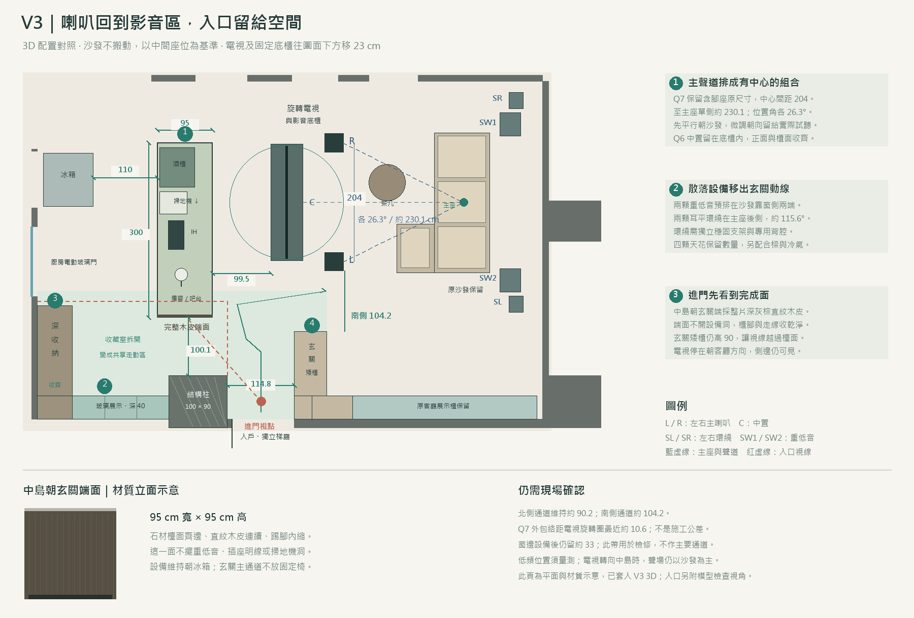
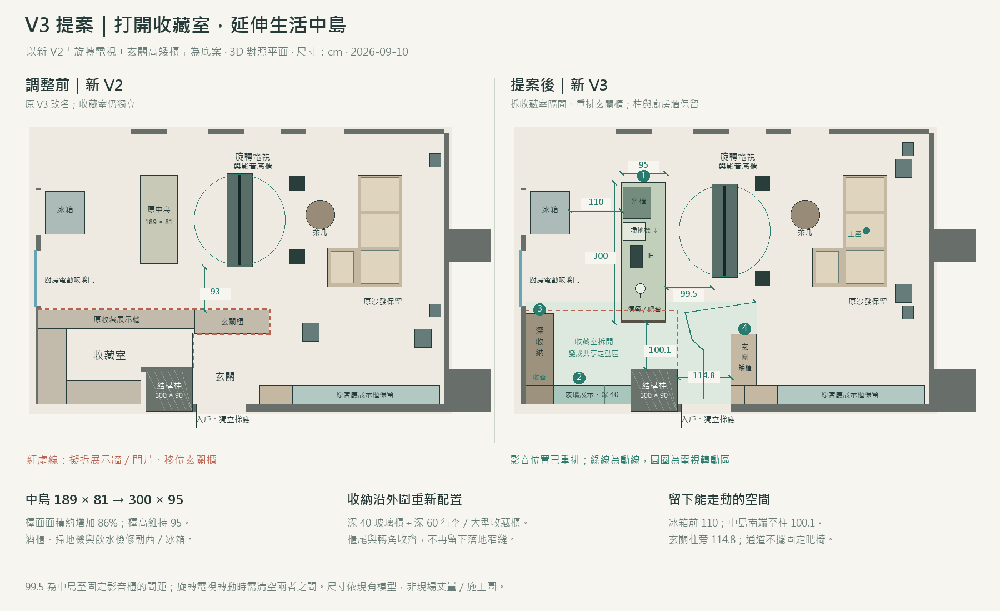
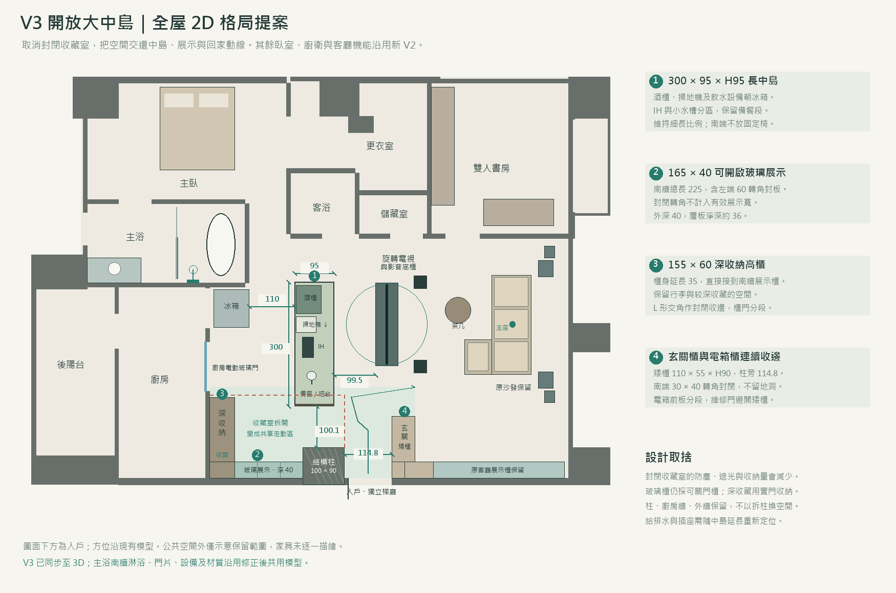

V3 開放大中島
3D 模型與 2D 對照以新 V2 的旋轉電視方案為底，拆除收藏室展示牆與入口，將原房間納入中島區。保留結構柱及廚房牆，讓櫃子退到周邊，中央用一座細長中島整合備餐、飲水、酒櫃及掃地機。玄關矮櫃一併移位，避免留下橫擋在開放區的櫃體。
本次重排影音與入口視線：沙發保留原位，電視及底櫃往圖面下方移 23cm，對齊中間座位；主喇叭中心間距改成 204cm，南側通道約 104.2cm。兩顆重低音移出入口，改在沙發靠窗側預排。以上配置已套入 V3 3D，V1、V2 仍保留各自原配置。
喇叭配置與進門看到的畫面
原配置的問題是音響散落在回家路線，入口會同時看見中島端頭、電視側面和設備，缺少視覺主次。修訂後以沙發為影音中心；朝玄關的中島短端則採整片深灰棕直紋木皮，石材檯面齊邊、踢腳內縮，不開設備洞。酒櫃、掃地機、飲水檢修仍朝冰箱，線路走地坪內預留管路，不跨通道拉明線。

| 調整 | 原位置 → V3 提案 | 原因與限制 |
|---|---|---|
| 電視與固定底櫃 | 向圖面下方移 23cm | 對齊沙發中間座位；中島到固定底櫃仍是 99.5cm。中置留在底櫃內，朝沙發並與櫃面收齊。 |
| 左右 KEF Q7 Meta | 間距 158 → 204cm；往電視移 42cm | 保留含腳座 31.7 × 31.5 × 高 100.1cm，不縮小機身；兩側前障板至主座各約 230.1cm，位置角各約 26.3°。先平行朝沙發，再試聽微調。 |
| 通道與旋轉範圍 | 北側約 90.2cm；南側約 104.2cm | 按喇叭完整腳座到對面邊界量測。喇叭與電視旋轉圈最近約 10.6cm；電視轉動時仍需清空旋轉區。 |
| 兩顆 SVS SB-2000 Pro | 入口散放 → 沙發靠窗側兩端 | 兩顆均保留，預排位置不佔主要回家路線；與沙發側邊約 17cm，兩顆單體分別向圖面上、下方。靠窗是空間取捨，不能只靠平面決定低頻好壞，需量測多個座位再調位置、延遲及相位。 |
| 耳平環繞 × 2 | 主座後側，位置角約 115.6° | Ci160QR 仍需獨立穩固支架、定製背腔與抗傾倒設計，不裝在落地玻璃上；中心高約 110cm。窗邊設備到牆最近約 33cm，這條帶不作主要走道。 |
| 天花高度聲道 × 4 | 保留數量，定位另行協調 | V3 定案後依主座、樑底與吊隱冷氣重排；本平面不假定原孔位已符合新聲場。 |
| 中島朝玄關端 | 95cm 寬 × 95cm 高完整木皮端面 | 設備開口朝冰箱，玄關視線落在完成面；不加高屏風或突出櫃體壓縮通道。 |
進門視點到中島端面的平面視線已避開結構柱。玄關櫃維持高 90cm；電視回家時停在朝客廳的方向，側邊仍會看得到，並非完全隱藏。入口實際透視、木皮與石材接縫，需在採用 V3 後以 3D 視點確認。
聲道配置參考 KEF 的對稱距離與初始朝向建議、Dolby 家庭劇院聲道配置。低頻預排依空間先避開通道，最終位置參考 SVS 的雙重低音位置與試測原則。以上距離與角度為本圖座標計算，不代表現場聲學量測。電視轉向中島時，音響仍以沙發為主聆聽區。
調整前後，使用相同比例

全屋位置

設計內容與間距
| 項目 | 本次提案（cm） | 設計用意 |
|---|---|---|
| 長中島 | 300 × 95 × 高 95 | 相較 189 × 81，檯面佔位面積增加約 86%；設備朝西、面向冰箱。 |
| 冰箱前操作區 | 110 | 按櫃門關閉狀態量；冰箱與酒櫃不宜同時對開。 |
| 中島至影音底櫃 | 99.5 | 固定底櫃的間距；電視轉動時需清空旋轉區，不能用此尺寸宣稱可邊轉邊通行。 |
| 中島南端至柱 | 100.1 | 保留連通收藏區及玄關的通道，不放固定吧椅。 |
| 玄關柱旁通道 | 114.8 | 從柱的右邊到玄關新矮櫃左邊。 |
| 收藏展示 | 可開啟展示 165 寬 × 40 深 | 南牆總長 225，左端 60 為封閉轉角，不計入有效展示；外深 40，層板淨深約 36。 |
| 深收納 | 155 寬 × 60 深 | 沿廚房牆延長 35cm，直接接到南牆展示櫃；高度依樑底配置。 |
| 玄關矮櫃 | 110 寬 × 55 深 × 高 90 | 包與鑰匙置物、少量鞋；短衣桿与側面帽鉤保留。 |
| 玄關南端轉角 | 30 × 40 封閉收邊 | 與電箱櫃接齊，採可拆封板，不計入有效收納；電箱前板分段，維修門避開矮櫃高度。 |
拆除的是收藏室隔間／展示櫃與門片。約 100 × 90 的結構柱、廚房邊界與外牆保留。圖面依現有模型座標，非現場丈量；施工前須確認隔間內的管線與結構，並重新安排中島給排水、插座及設備散熱。
用餐與功能
中島東側南段留膝深34、寬104cm，活動椅預設收起；南端100.1cm通道不設固定座位。沿用旋轉電視、茶几升降、廚房電動門、RGB、窗簾、步行及家具規格清單。查看模型視角與檢查。
這個方案的取捨
優點是中島與入口視線連續、動線可以繞行，材質與櫃體能做成整體。代價是原本整面收藏展示與深櫃總量減少，也失去獨立收藏室的遮光條件；改用可關門的展示櫃控制灰塵，較深收藏放實門櫃。若收藏量已接近放滿，需依清單核對後再決定是否採用。
動線參考：本案採單人操作區 110cm、一般通道約 100cm；參考 NKBA Kitchen Planning Guidelines 的操作區與通道規劃，不是將國外規劃建議當成本地法規或施工認證。圖上尺寸為模型推算，電視、椅子及櫃門開啟時另計動態範圍。